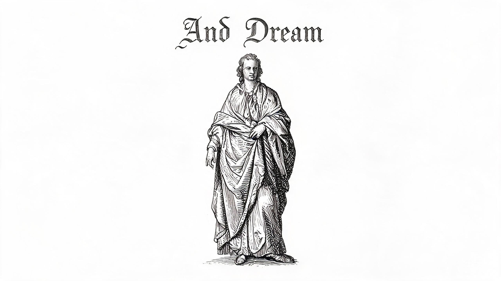
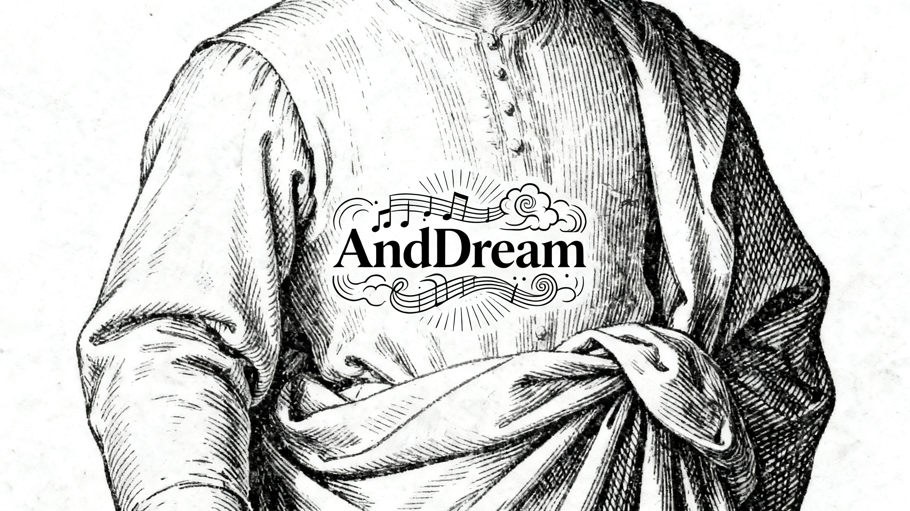
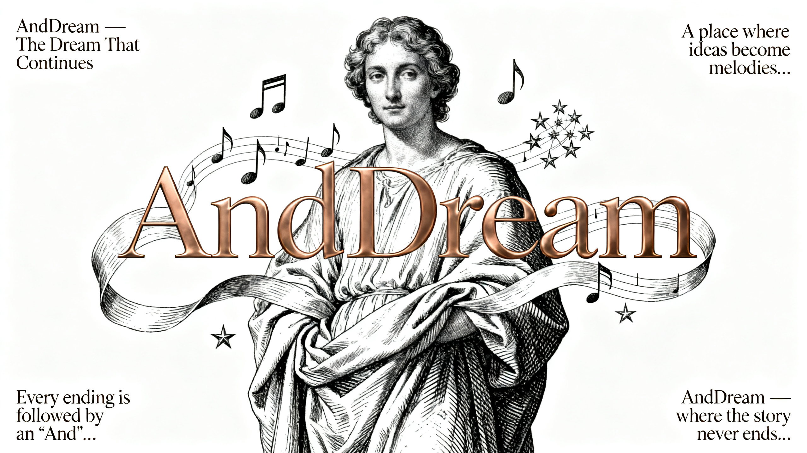
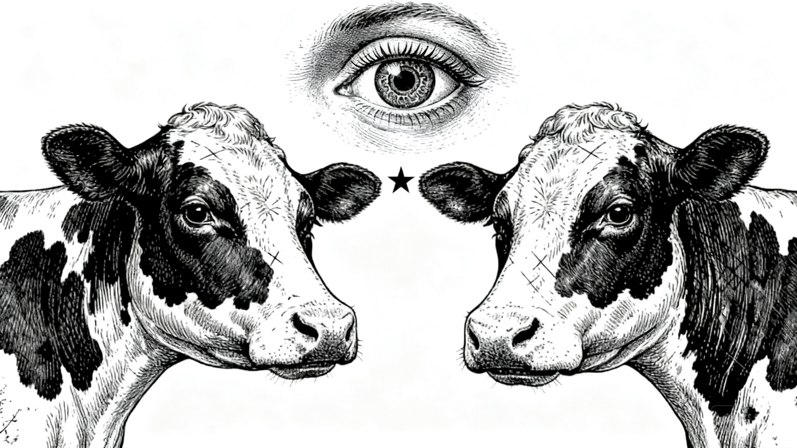

The Dream That Continues
~ working title, maybe drop "The"? ~
AndDream is a name born from Andrew, yet it reaches far beyond. It begins with “And” — the very first sound of my name, yet it also carries a deeper meaning: a word of connection, continuation, and endless possibilities.
AndDream，Andrew的梦想。 too literal
AndDream 这个名字源于 Andrew，也超越了 Andrew。它以「And」开头——我名字的第一个音节，
但这个词更深的含义是：← key word! 连接、延续、与无限可能。
“And” is a word that never stands alone;
it always points toward something more.
← underline this!!!


moodboard — dark tones + gold accent
So AndDream is not just “Andrew’s Dream.” It is also “And… Dream.” An unfinished sentence. A story still in motion.
所以 AndDream 不只是「Andrew 的梦想」。它也是「And… Dream」—— 一个永远未完成的句子，一个仍在继续的故事。
love this line. anchor the whole brand here?
Every ending is followed by an “And.”
Every dream leads to another dream.
每一个终点之后，都还有新的开始；
每一个梦想实现之后，都孕育着下一个梦想。
A space where ideas become melodies,
emotions become expressions,
and dreams become reality.
~ consider adding "music" ref here? ~
AndDream is a bridge between reality and imagination. It belongs to Andrew, yet it does not belong to Andrew alone. It is a journey — of creation, of growth, and of infinite possibilities.
AndDream 是一个连接现实与梦境的空间。它属于 Andrew，也不只属于 Andrew。 这是一段创造、成长、与无限可能的旅程。
AndDream — where the story never ends,
and every dream begins with an “And.”
与梦同行，永不止息。
✓ approved. ship it.


these work. use as bg inspiration.
~ logo explorations ~
too complex. go with text-only for now.